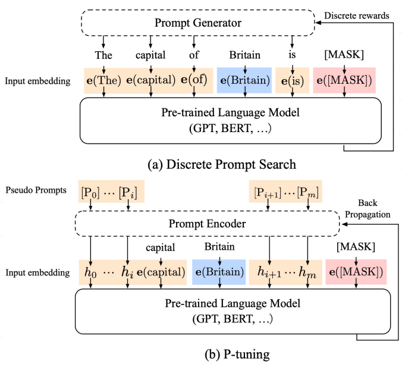
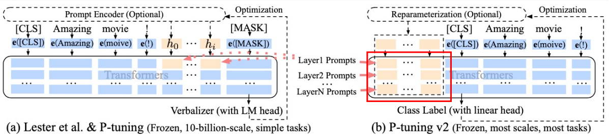
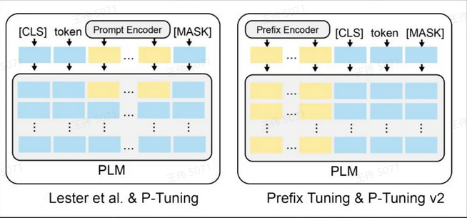

P-Tuning[2] #
- P-Tuning 的创新之处在于将提示（Prompt）转化为可学习的嵌入层（Embedding Layer）
架构 #

-
一个关于“The capital of Britain is [MASK]” 示例：
- 蓝色是上下文 “Britain”
- 红色是目标单词 “[MASK]”，
- 橙色区域是提示词。
-
传统方式 与 P-Tuning 对比：
- 在（a）中，提示生成器只接收离散奖励；
- 在（b）中，连续的提示嵌入（Prompt Embedding） 和**提示编码器（Prompt Encoder）**以可微的方式进行 优化。
P-Tuning v2[2] #
背景 #
之前的方法在以下两方面有所限制： • 模型规模差异：在大型预训练模型中，Prompt Tuning 和 P-Tuning 能取得与全面微调相似的效果，但在参数较少 的模型上则表现不佳。 • 任务类型差异：无论是 Prompt Tuning 还是 P-Tuning， 在序列标注任务上的表现都较差。
目的 #
P-Tuning v2 旨在使提示调整（Prompt Tuning）在不同规模的预训练模型上，针对各种下游任务都能达到类似全面微调（Fine-tuning）的效果。
架构 [1] #

在每一层都加入了Prompts tokens 作为输入, 而不是仅仅加在输入层总结 #

- P-tuning 和 Prompt Tuning 仅仅更新第一个Transformer层
- Prefix tuning 和 P-Tuning v2 针对每一个Transformer 层进行更新
- Prefix tuning 和 P-Tuning 需要重新参数化(PromptEncoder), 而Prompt Tuning 和 P-Tuning v2则不需要
- 简单将P-Tuning认为是针对 Prompt Tuning的改进, P-Tuning v2 认为是针对 Prefix tuning 的改进.
参考 #
-
大模型参数高效微调技术原理及实践 pdf 如何高效微调大模型？技术原理与最佳实践揭秘！ V ***
-
《3-大模型微调技术揭秘-PEFT》 Ai大模型微调